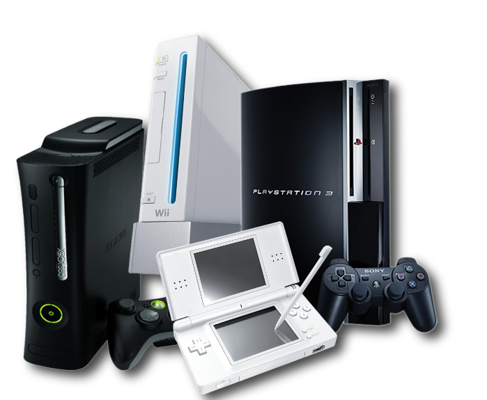
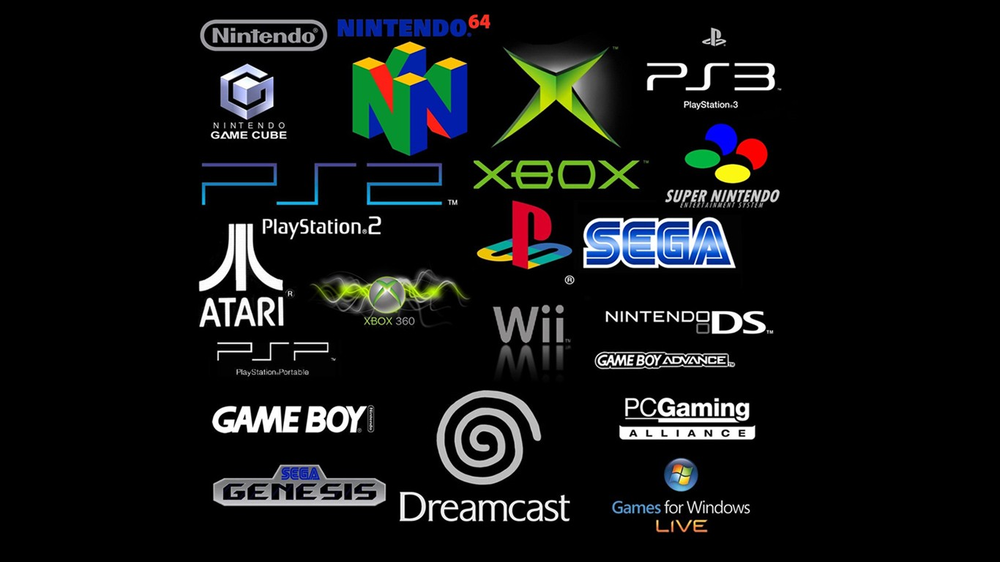
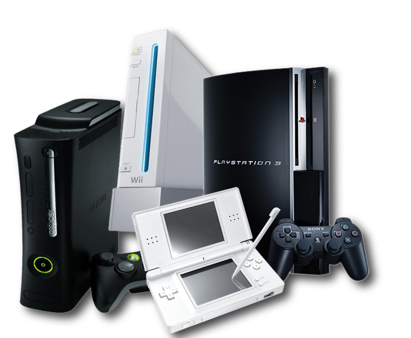
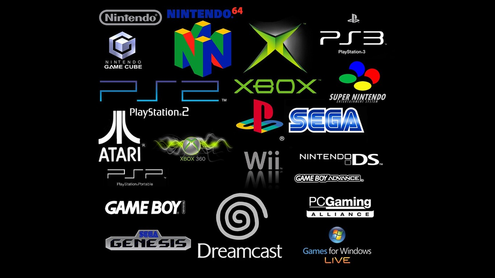

Daniel's top 10 video game consoles

Ralph Baer created the first successful game called "Pong" which was created in black and white graphics. The kids would play on an atari console with a joystick connected like this:  the games were not exciting but there was a recreation with different graphics and the same game but called "Tennis" the game had scores on each side an the player would try to smack the ball back to the computer generated player, and the person who had 10 points wins. Some Games are used for thinking and designing.


the games were not exciting but there was a recreation with different graphics and the same game but called "Tennis" the game had scores on each side an the player would try to smack the ball back to the computer generated player, and the person who had 10 points wins. Some Games are used for thinking and designing.

